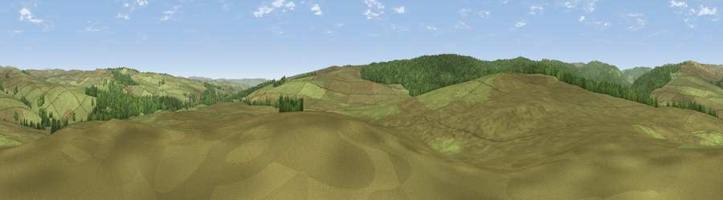

Viewpoint near Rochester
#25294 in England · top 61% of its area beats it · near RochesterWhere it is
The exact computed spot (NY 80775 98225). Click the marker for map links.
The view, rendered

A 360° render of this exact spot computed from the terrain model, tree cover and land cover — summer colours, afternoon light, calibrated against photographs of famous viewpoints. Real trees, hedges and buildings will differ in detail.
The panorama
Grey silhouette: terrain skyline in each direction (720 bearings, Earth curvature and refraction included). Dashed green: skyline with trees (+15 m) and buildings (+8 m) as obstacles. Blue strip: how far the ground is visible on each bearing.
Where the view opens
Wedge length = distance to the farthest visible ground on that bearing (vegetation-aware). Rings at 10, 25 and 50 km.
What fills the view
86% grassland · 14% woodland
Angular shares of the visible panorama (visual magnitude), not map area. Landscape diversity 0.18 (0–1 Shannon).
Key numbers
More beautiful places nearby
The staircase of upgrades: each row has a higher view potential than everything closer. Driving times are estimates from straight-line distance, calibrated against real road routing — check an actual route before setting out.
| Place | Direction | Drive | Score |
|---|---|---|---|
| Viewpoint near Rochester | ENE · 4 km | ~8 min | 59.8 |
| Viewpoint near Byrness | WSW · 4 km | ~10 min | 64.1 |
| Viewpoint near Byrness | NNW · 4 km | ~10 min | 73.3 |
| Blackman's Law | W · 6 km | ~13 min | 74.1 |
| Ellis Crag | WNW · 7 km | ~14 min | 77.2 |
| Monkside | WSW · 13 km | ~23 min | 78.4 |
| Viewpoint c12122_7374 | NW · 14 km | ~26 min | 78.9 |
| Windy Gyle | NNE · 18 km | ~31 min | 79.7 |
55.27778, -2.30417 · source: screening · position refined by local search. Computed location — check access rights before visiting.